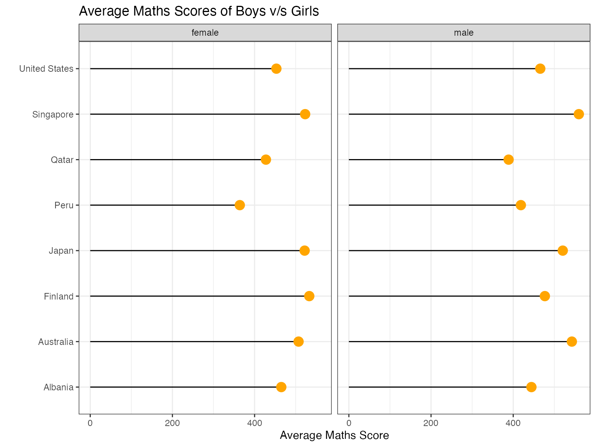
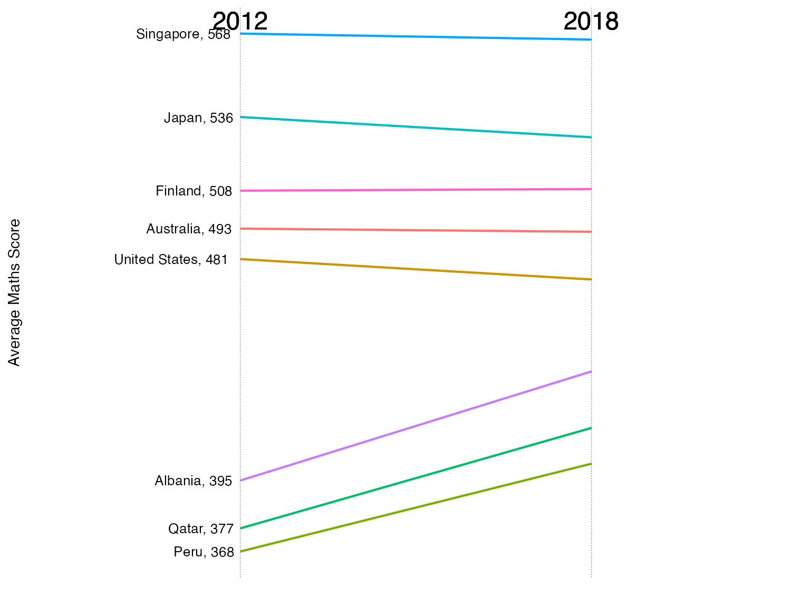

The PISA 2018 results were released on 3 December 2019. This led to wringing of hands in the Australian press, with titles of stories like Vital Signs: Australia’s slipping student scores will lead to greater income inequality and In China, Nicholas studied maths 20 hours a week. In Australia, it’s three.
Australia’s neighbours, New Zealand and Indonesia, are also worrying: New Zealand top-end in OECD’s latest PISA report but drop in achievements ‘worrying’, Not even mediocre? Indonesian students score low in math, reading, science: PISA report.
The data from this survey and all of the surveys conducted since the first collection in 2000, is publicly available. We have made a more convenient subset of the data available in a new R package, called learningtower, along with sample code for analysis, openly available.
The goal of learningtower is to provide a user-friendly R package to provide easy access to a subset of variables from PISA data collected from the OECD, for years 2000 - 2018, collected on a three year basis.
This vignette documents how to access these datasets, and shows a few typical methods to explore the data.
The student subset data consists of sample datasets comprising scores and other information from triennial testing of 15-year-olds worldwide. Original data may be obtained from OECD
The student subset dataset for different years are simply samples of the student data and can be used as a starting point. The complete student dataset is available as part of the learningtower package and can be loaded using the load_student() function included in this package.
In the student subset data available for each year contains almost 50 or more observations for each country that participated in the PISA experiment during the years this experiment was performed.
Here is typical example of this can data can be loaded and analysed.
library(tidyverse)
library(learningtower)
#load the subset student data for the year 2018
data(student_subset_2018)
#load the countrycode data
data(countrycode)
#lets plot the score of avergae math score of girls and boys for a few randomly selected countries
student_subset_2018 %>%
group_by(country, gender) %>%
dplyr::filter(country %in% c("AUS", "QAT", "USA" , "JPN",
"ALB", "PER", "FIN", "SGP")) %>%
summarise(avg_math = mean(math, na.rm = TRUE)) %>%
left_join(countrycode, by = "country") %>%
arrange(avg_math) %>%
mutate(country_name = fct_reorder(country_name, desc(avg_math))) %>%
#joining the data with countrycode fetches the country name
ggplot(aes(x = avg_math,
y = country_name)) +
geom_segment(aes(xend=0, yend=country_name)) +
geom_point( size=4, color="orange") +
facet_wrap(~gender) +
theme_bw()+
labs(title = "Average Maths Scores of Boys v/s Girls",
x = "Average Maths Score",
y = "")
In the figure above, we see that from the student subset data for the year 2018, in countries like Singapore, Australia and Canada boys perform better as compared to the girls. However, in countries such as Finland, Qatar and Japan, girls perform better than the boys or are on the same level with boys when it comes to their average mathematics scores.
Furthermore, if we want to learn more about the trend in each year of the selected countries or know more about the yearly student scores, the complete student data can be retrieved for that/those years or all years using the load_student() function included in this package.
#load the entire student data for the year 2018
student_data_2018 <- load_student(2018)
#load the entire student data for two/three years (2000, 2012, 2018)
student_data_2012_2018 <- load_student(c(2012, 2018))
student_data_2000_2012_2018 <- load_student(c(2000, 2012, 2018))
#load the entire student
student_data_all <- load_student("all")
The figure above assists us in deducing the score change in the different countries form the year 2012 to 2018. This figure enables us to deduce that Albania, Qatar, and Peru have significantly boosted their average mathematics score between these years. While we also observe drop in average mathematics score for Japan.
Similarly, you may import student data for any chosen year and experiment with the PISA scores or additional analysis of these datasets with their other variables that assist contributor comprehend the data. Refer to our articles on the github website for additional interesting analyses and plots.